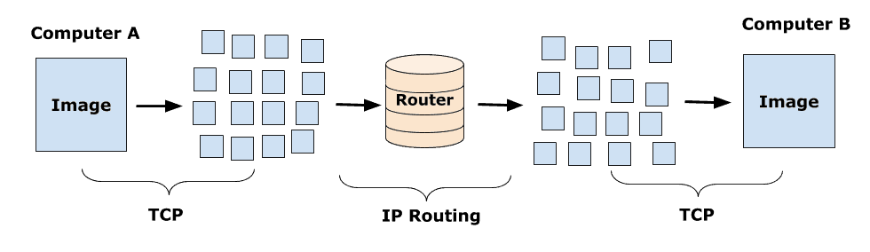

Although there are many types of IP's but Three major class IP's used widspread on IP networks
IP routing describes the process of transfer of data from on computer or server to another computer or server. A packet of data traverses from its root source to accorss many network until it finally reach at its deestination using a routing algorithm. When packet starts it's journey it divides into many parts and each and every packet tavels individual to it's destination. TCP/IP is known as Internet Protocol suite , is a collectio of communication protocols that use internet connectivity to send an receive data. A protocol defines rules of commnunication while data is being traversed from one server to another server.IP deals with the sending and receving data of the packets from one server to another server using web of routers in a process known as IP Routing. Once the packet reaches at it's final destination TCP refoems packets in their original form.
OSI Layer Designation
OSI layer consits of 7 diffrenet layers
This is the Normal structure of OSI layer Designation
Each and every layer has their own property and protocols to handle data when it is being transferred.
Interior & Exterior Routing Protocols
An interior gateway protocols (IGP) is used to route the traffic within each separate network of an autonomous system (AS). The working of a distance vector routing protocol helps the routers to exchange their link information with immediate neighbors and update their routing table. In a link state protocol, the router exchanges its network topology information in terms of its links and interfaces with its neighbors
Exterior Gateway Protocol (EGP) is a protocol for exchanging routing information between two neighbor gateway hosts (each with its own router) in a network of autonomous systems. EGP is commonly used between hosts on the Internet to exchange routing table information. The routing table contains a list of known routers, the addresses they can reach, and a cost metric associated with the path to each router so that the best available route is chosen. Each router polls its neighbor at intervals between 120 to 480 seconds and the neighbor responds by sending its complete routing table.
How NAT Works?
NAT stands for "Network Adress Translation"
Let's assume there is on PC . You have searched to download any type of software into your PC. Then your PC sends request in a packet to a router which , goes thorugh web. When You locates that actual file and click on download button it means that you want to download that file on your local machine but your address is not public. You are working through private router tehn How will that packet know where to send file? By using "NAT" That file will be back to the PC using PC's Public adress not private.
DNS HIARCHY
IPv4 is a version 4 of IP. It is a current version and the most commonly used IP address. It is a 32-bit address written in four numbers separated by 'dot', i.e., periods. This address is unique for each device. IPv4 produces 4 billion addresses, and the developers think that these addresses are enough, but they were wrong. IPv6 is the next generation of IP addresses. The main difference between IPv4 and IPv6 is the address size of IP addresses. The IPv4 is a 32-bit address, whereas IPv6 is a 128-bit hexadecimal address. IPv6 provides a large address space, and it contains a simple header as compared to IPv4. IPv4 is a numeric address that consists of 4 fields which are separated by dot (.) whereas IPv6 is an alphanumeric address that consists of 8 fields, which are separated by colon. IPv4 has 5 different classes of IP address that includes Class A, Class B, Class C, Class D, and Class E but IPV6 doesn't contains any classes.IPV4 supports manual and DHCP configuration. IPV6 also supports manual and DHCP configuration . In addition It also supports auto-configuration and renumbering. IPV4 can generate 4 Billion uqique addresses while IPV6 generates 340 undecillion unique addresses.
Static and dynamic routing